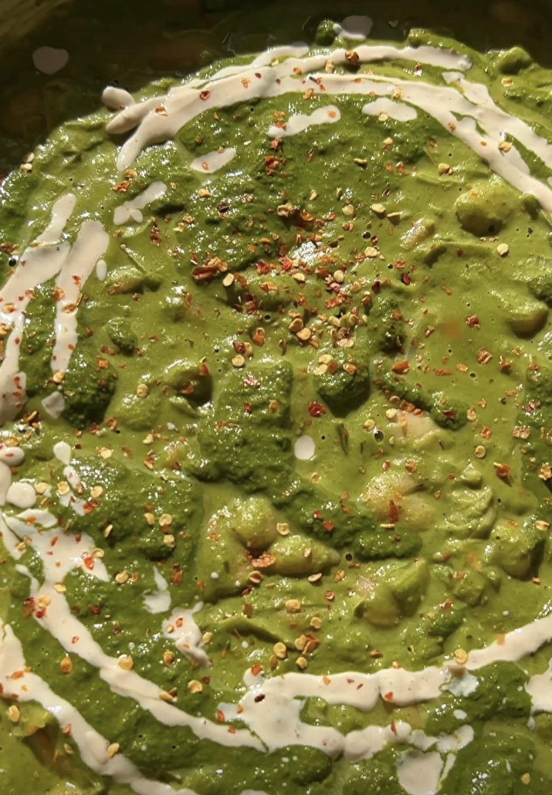

Kale Butter Beans

Creamy Miso-Kale Butter Beans
Dive into a bowl of comforting goodness with these Creamy Miso-Kale Butter
Beans. This enticing dish features tender butter beans, vibrant kale leaves,
and fragrant leeks, all infused with the umami richness of white miso. The
velvety sauce is made from soaked cashews, lending a creamy and luxurious
texture, while nutritional yeast adds a cheesy and nutty undertone. With a
squeeze of zesty lemon to brighten the flavors, each spoonful offers a
harmonious balance of savory, earthy, and tangy notes. Prepared with love
and simmered to perfection, these Miso-Kale Butter Beans provide a wholesome
and satisfying meal that will warm your heart and nourish your body.
Ingredients
- 2 bunches of kale, stems removed
- 2 large leeks
- 3 tins butterbeans
- 6 cloves garlic
- 2 tbsp olive oil
- 1/2 cup soaked cashews
- 2 tbsp nutritional yeast
- 2 tbsp white miso
- 1 lemon
Steps
- Blanch kale: place kale in a pot of boiling water for 2 minutes,
then plunge into cold ice water to stop the cooking
- Blend green sauce: Blend kale, cashews, nutritional yeast, 1 Tbsp
olive oil, miso, 2 cloves of garlic, and juice of the lemon
- Cook leeks: Carmelise leeks in a medium heat with a big pinch of salt
for 10 minutes until they're becoming brown and sweet. Add the rest of
the garlic (minced) and the spices, cook for 3-4 minutes. Finally, add
the butterbeans
- Add green sauce: Stir through the green sauce and bubble for 2 minutes.
Take off the heat
- Finish: Finish with chili flakes, black pepper, olive oil and optional
tahini yogurt sauce (1 Tbsp tahini, 2 Tbsp yogurt, lemon juice, water to
loosen)
- Serve with bread/toast
Home